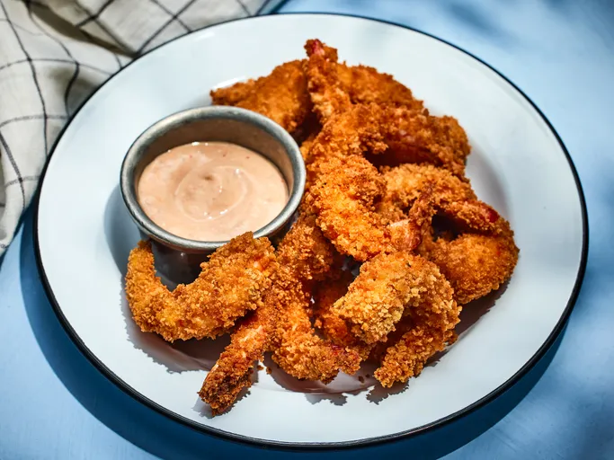

Odin's Project
Back to Home
Japanese-style-Deep-Fried

These deep-fried shrimp come out golden and extra crisp thanks to a panko crumb coating, with simple seasoning that keeps them savory and snackable straight from the fryer.
| Prep Time |
10 minutes |
| Cook Time |
15 minutes |
| Servings |
4 |
Why You will Love This Recipe
This deep-fried shrimp is filled with flavor and with heat, thanks to the garlic powder and paprika.
Home cooks rave about the crunchy, golden panko coating.
Reviewer Cookinmom says, “It was so perfectly crunchy and such an indulgence.”
Ingredients
- 1 pound medium shrimp, peeled (tails left on) and deveined
- ½ teaspoon salt
- ½ teaspoon ground black pepper
- ½ teaspoon garlic powder
- 1 cup all-purpose flour
- 1 teaspoon paprika
- 2 large eggs, beaten
- 1 cup panko crumbs
- 1 quart vegetable oil for frying
Process
- Gather all ingredients.
- Place shrimp in a bowl and season with salt, pepper, and garlic powder.
- Mix flour and paprika together in a shallow bowl. Place eggs in a second bowl and panko crumbs in a third bowl.
- Heat oil in a deep fryer or deep skillet to 375°F (190°C). Dip each shrimp into the flour mixture, then into the beaten eggs, and finally into the panko crumbs to coat.
- Fry a few shrimp at a time in hot oil until golden brown, about 5 minutes.
- Remove with a slotted spoon and drain on paper towels before serving.
- Serve and enjoy!